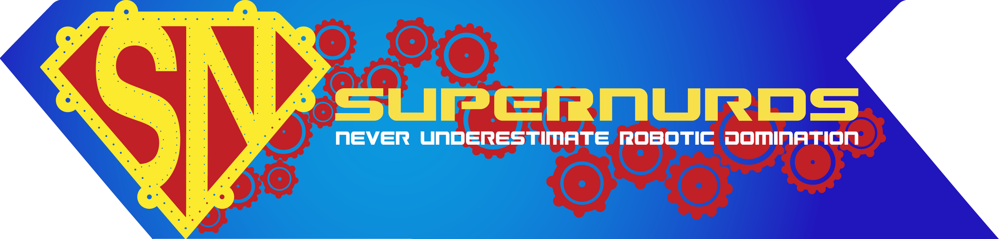
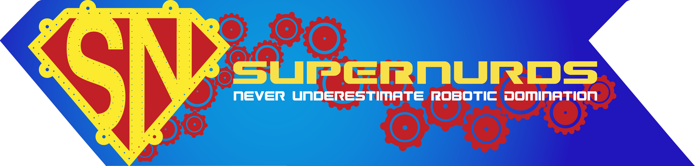
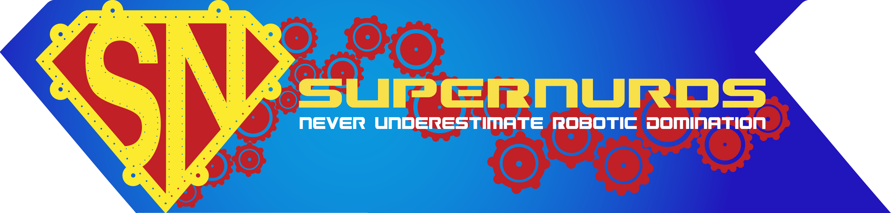
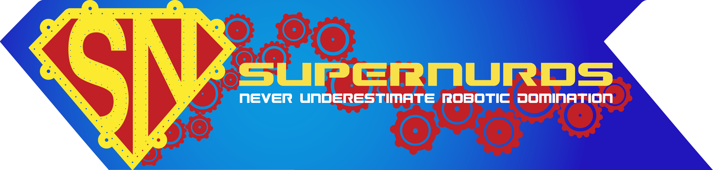
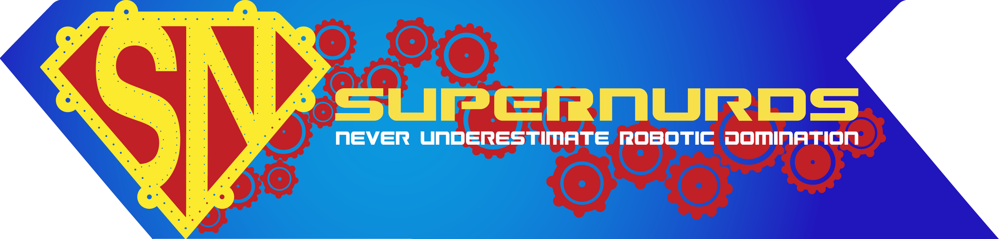

Current Programming and Business Mentor
Former Student Programming and Business Lead
Projects I have contributed to:
SuperNURDs Website
Designed website and graphics for the website
SuperNURDs YouTube
Filmed and edited videos (where credited)
SuperNURDs GitHub
Contributed to award winning code:
IronCan (2015 Robot)
Currently a programming mentor where I do code reviews and teach students java programming
 


